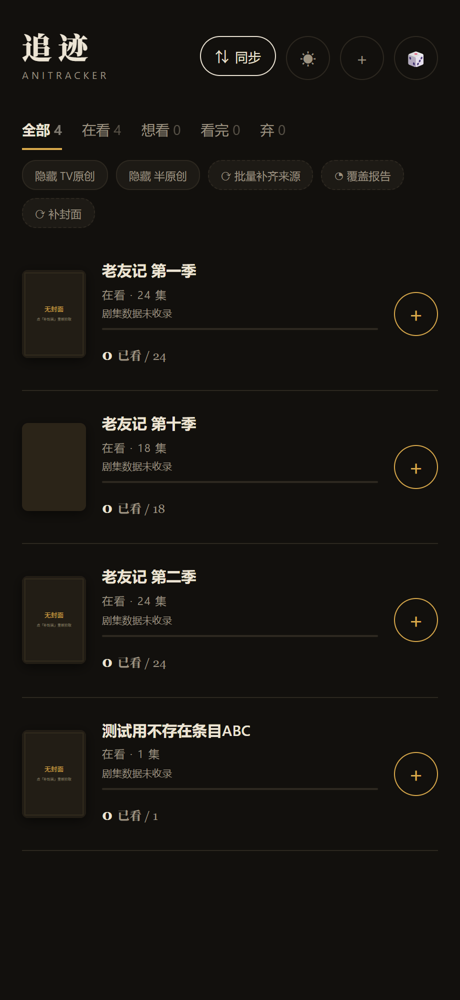
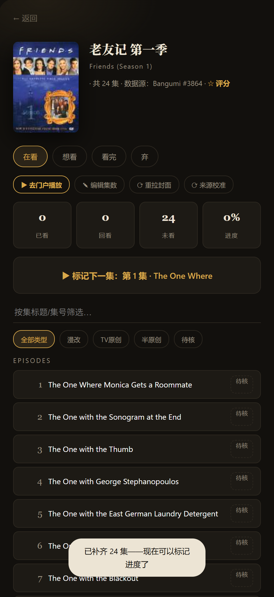
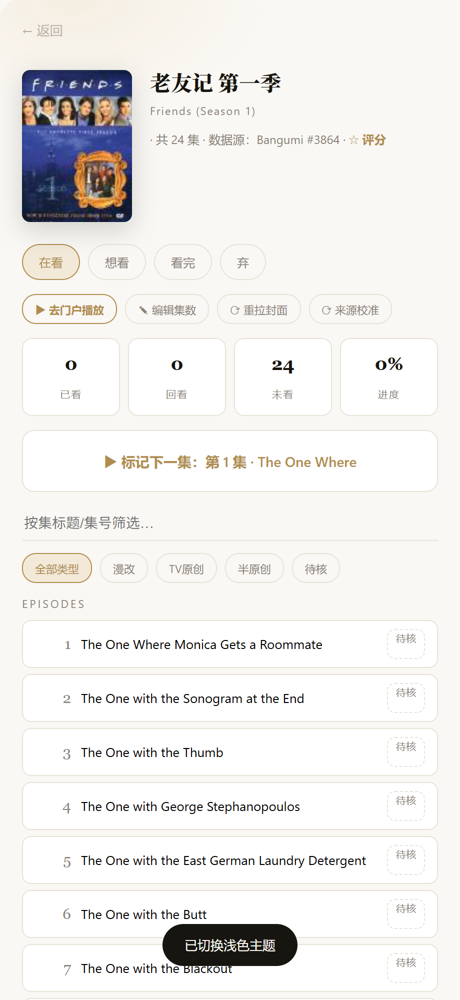
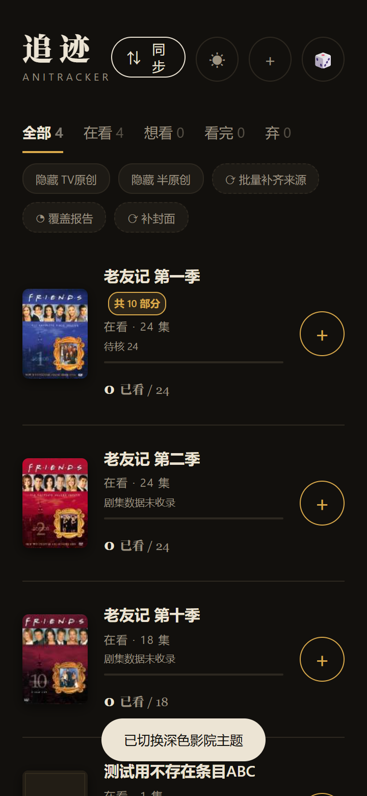
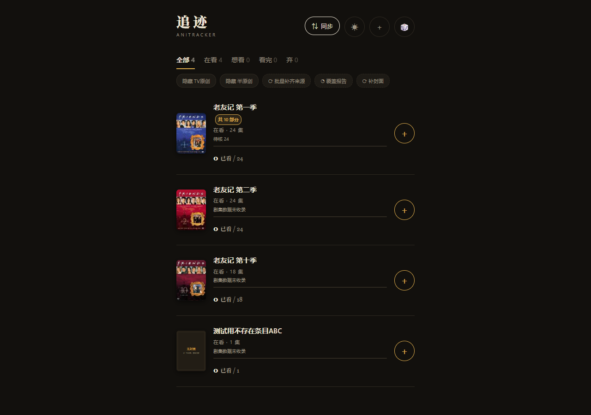

封面自愈与影院深色主题
《老友记》及全部无封面条目的根因修复 · 全项目美化 · v2.6.0 交付报告
01 / 一页结论《老友记》为什么没有封面，现在怎么样了
封面缺失不是单一故障。追迹的四条添加路径里，三条根本不取封面；「关联 Bangumi」补了剧集却从不补封面；而取封面失败又被静默吞掉。《老友记》正好命中最典型的组合（本地添加 ＋ 关联后仍无封面）。
v2.6.0 新增「封面自愈」系统：无论条目来自哪条路径，只要 Bangumi 收录了该作品，封面都会被自动补齐、压缩为本地缩略图并持久保存；搜不到的条目保持可辨识的占位（不裂图、不报错）。同时全项目换成影院深色主题（默认深色、可一键切回浅色）。
02 / 诊断为什么以前没有封面 —— 六项根因
封面存放在浏览器本地（tr_shows[].cover），正常应为「96×128 本地 dataURL」。逐路径排查结果：
| # | 路径 | 行为 | 后果 |
|---|---|---|---|
| R1 | 手动添加 | 不写封面字段 | 永远无封面 |
| R2 | B站门户导入 | 存 B站外链 | 外链失效/防盗链 → 占位 |
| R3 | 内置库添加 | 未携带封面字段 | 永远无封面 |
| R4 | 在线搜索添加 | 唯一会抓封面；失败则回退远程 URL | 后续加载失败 → 占位 |
| R5 | 关联 Bangumi | 只补剧集、不补封面 | 关联成功但封面仍缺 ← 老友记命中 |
| R6 | 失败静默 | 抓取失败无提示、无重试、无入口 | 用户无从恢复 |
数据源是被冤枉的（实测）
Bangumi 实测完整收录《老友记》全 10 季（type=6 三次元），封面 URL 全部 200 可访问；应用内也已预置「老友记 / Friends / 六人行 / フレンズ」搜索别名组。问题 100% 在封面管线本身——这正是修复要解决的问题。
03 / 机制封面是怎么拉取的
找出所有「cover 不是本地 dataURL」的条目（空值 / 外链 / 历史失败，一视同仁）
有条目 ID → 直查官方条目；无 ID → 按 原名/中文名/别名组 搜索，精确优先、包含兜底（只补封面，不改关联）
直连 → proxy.cors.sh → api.codetabs.com 三级链，每级 6 秒超时
画布压缩为 96×128 JPEG dataURL（不依赖任何第三方图床）
写入本机存储（localStorage）：刷新、重启、离线都不丢；导出备份一并带走
成功备案；失败记 24 小时退避（不重试风暴），随时可手动重试
入口共四处：首页 「⟳ 补封面」（全量）、详情页 「⟳ 重拉封面」（单条）、关联 Bangumi 后自动补、打开应用后启动小批量自愈（每会话 ≤6 部，离线跳过）。
04 / 变更修复了什么 · 美化了什么
修复（功能）
- 封面自愈系统（扫描 → 两级取源 → 三级抓取 → 本地持久化 → 台账退避）；
- 抓取管线加固：http→https 自动升级（本机豁免）、代理链扩至两跳；
- 全部封面图片加
referrerpolicy="no-referrer"（对防盗链外链是硬保险）； - 关联 Bangumi 后自动补封面（堵住 R5 根因）；
- 空剧集文案修复：有总集数但无剧集的条目不再误报「全部标记过了」。
美化（影院深色主题 · 05 Locomotive）
- 近黑暖底 × 暖金点缀：底
#12100d、暖金#d9a94b； - 电影化氛围：海报阴影、详情页微光晕、点按微交互；
- 20+ 处硬编码浅色全部深色适配；占位图双主题；
- 顶栏 ☀/☾ 一键切换，偏好记忆（
at_theme）。


详情页同样焕然一新：封面、剧集、统计、深色主题一次到位。

05 / 验证证据链
| 项目 | 结果 | 证据 |
|---|---|---|
| 自动化回归 | 19/19 通过（覆盖封面自愈 6 项、主题、离线兜底） | verification/regression-19of19.json |
| 真网走查 | 3 条老友记封面补齐 · 详情 24 集 · 失败条目按预期占位 | verification/walkthrough-v260.json |
| 回滚演练 | 备份恢复件 SHA256 与清单一致；旧版实测可开 | verification/rollback-drill-v260.* |
| 像素校验 | 深色底 = #12100d、浅色底 = #faf8f4（与设计值一致） | 04-验证记录.md |
| 视觉抽检 | 识图复核三图：配色协调、封面清晰、无错位/遮挡/溢出 | verification/qc-visual-review.md |
质检原话摘录：“深色底 + 暖金点缀……对比充足但不刺眼；三张《老友记》海报（蓝/红/紫）均正常渲染，能看清 FRIENDS 字样与演员头像；无错位、无遮挡、无溢出。”
主题切换与多尺寸



06 / 使用用起来 · 兜底 · 回滚
60 秒上手
- 打开追迹（一键启动脚本）→ 首页点 「⟳ 补封面」，存量条目全量补齐；
- 以后新增条目自动带封面；单条可随时「⟳ 重拉封面」；
- 顶栏 ☀/☾ 切换深色/浅色。
失败兜底
- 断网：自动跳过 + 占位图（不裂图、不报错）；联网再点即补；
- 搜不到：保持可辨识占位 + 24h 退避，亦可手动指定封面（见《03-运维交接手册》第五节）；
- 限流/超时：三级抓取链 + 单条失败不影响批量继续。
回滚（1 分钟）
把 backup_20260915_pre-v260/ 中 5 个文件覆盖回项目根目录 → Ctrl+F5 强刷，即回到改动前（v2.5.4）。已演练验证。
项目真身：
D:\项目\01_媒体娱乐\ani-tracker ｜ 交付目录：DELIVERY\anitracker-v2.6.0-cover-heal-20260915\本页为静态单文件（无脚本、无外链资源，图片为本地相对路径）。